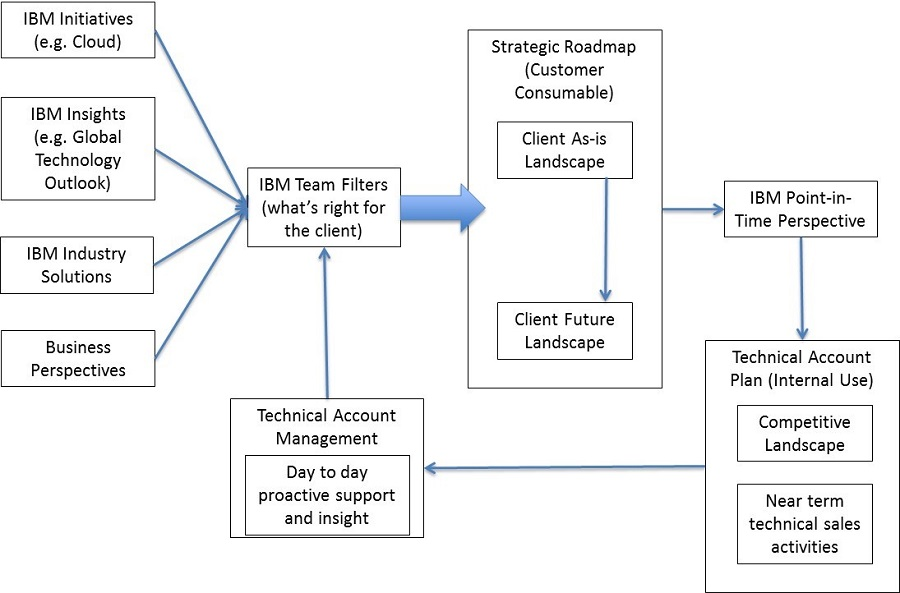

| Task: Plan for Client Value |
 |
|
| You may do this in a systematic fashion for the overall enterprise, a specific line of business or around a client imperative. Even when you have a specific trigger or opportunity for client value that is indicated, it is important at this point to consider the broader context so you do not miss critical information. It is critical that you identify the scope of this Task before proceeding. |
| Roles | Primary Performer: | Additional Performers: |
|---|---|---|
| Inputs | Mandatory:
| Optional:
|
| Outputs |
|
|
| Process Usage | ||
There are several ways in which you can approach planning for Client Value. In each case the objective is to produce a plan that combines industry and technical insight and identifies IBM and partner capabilities to deliver associated value.
Note than in all cases, it is recommended that the Technical Account Plan be updated. Technical Account PlanningIf you are the Technical Sales leader for an IBM client, you are expected to produce a Technical Account Plan for your Client. This should be driven by the business and technology initiatives of the client together with your insights on where IBM technology can contribute to your client's success. You should consider all areas of the client's business in producing this plan and complement the overall plans produced by the IBM team (Client Value Account Plan) and the activities in Client Growth Strategic Planning (CGSP). ScopeThe scope of the Technical Account Plan (TAP) is typically the enterprise - or at least a large part of it. The plan will contain multiple projects that the client will perform to move to the target architecture. Each project may then develop into a unique opportunity with a set of Team SD activities and tasks. The Technical Account Plan includes documentation of the client's current technical environment and the series of steps, or roadmap(s), required to transform a client from their current "as-is" environment to a "target" or "to-be" environment and associated set of capabilities. The term "roadmap" in this context is a series of projects undertaken by the client (with or without outside help) to progress a capability toward a target. The projects are linked together through dependencies on other projects. Together, the projects and dependency linkages form the roadmap. Here are some examples of the type of Information Technology capabilities that might be the target of the roadmap in a Technical Account Plan:
The duration of one of the projects in the roadmap may be measured in multiple weeks or months. If the roadmap projects together are too detailed they'll begin to resemble a project plan, which is not appropriate for this level of roadmap. Where there are multiple capabilities, it may be appropriate for a Technical Account Plan to have multiple roadmaps. Developing a Technical Account Plan (TAP)Technical leaders in the sales team will typically prepare the roadmap as part of pre-sales technical strategy and planning activities. They will use the most appropriate tools depending on the capability domain. A common tool to use is a Maturity Model for a specific capability. The Assessment and Roadmap Tool / Technical Health Assessment (ART/THA) tool provides additional assistance with pre-loaded maturity models for certain IT capabilities. The early stages of a roadmap may be more detailed than the later stages. Think of an automobile trip from New York to the "west coast". The steps (projects) to get out of New York City will be quite detailed whereas the later steps may be dependent on unanswered questions ("do we want to go to the west coast of the US or Canada?") or will be influenced by new findings along the way ("Wow, it really does rain a lot of Seattle. It's nice here, but let's reconsider."). You can also apply agile thinking to the roadmap. Each early project should represent at least a Minimally Viable Product. Later projects can be thought of as "epics" in terms of their size and scope. Alignment to Client Business and IT InitiativesA Technical Account Plan is also aligned to business initiatives, providing the technology required to support business processes via solutions from the core Systems of Record to Systems of Engagement or Analytics for Systems of Insight. This alignment is important as any transformation from "as-is" to "to-be" changes more than just the technology. It also changes the business processes and the organization. The Technical Account plan will focus on the technical capabilities and reference client information on business imperatives and changes planned for process or organization. A higher level Strategic Roadmap (see below) may be developed and provide a context, often multi-year, for the Technical Account Plan. The best practice is for the Strategic Roadmap to be a client deliverable that reflects a shared vision with IBM as a strategic partner. The diagram below shows the desired flow between the Strategic Roadmap, Technical Account Plan and relevant IBM value.
 Tools and TechniquesMany techniques can be used to develop either a Strategic Roadmap or the more specific capability roadmaps in a Technical Account Plan. These include:
Response to a Client ImperativeUse the Client Imperative artifact and complete the imperative definition section based on initial discussions with client sponsor. This will serve as a basis for identifying context and scope, interviewees and key questions. This may be derived from opportunity description in the Opportunity Plan if it is available. Add any other relevant content that is initially apparent to the remaining sections of the Client Imperative artifact. These sections will be refined and completed in a later task. If this opportunity originated with the client's interest in one of the IBM Blueprint's Industry Imperatives, the Client Imperative represents a specialization of the Industry Imperative, tailored to suit a specific client's needs. In such cases, information associated with the Industry Imperative may be helpful in documenting the client imperative. With the Client Imperative identified, consult IBM’s industry solutions portfolio and domain reference architectures for relevant material that can guide the production of a roadmap specific to this imperative. Follow the steps outlined below to produce a Strategic Roadmap that addresses the capability gaps you identify. IBM thought leadershipWithin the correct context, and backed by factual insight, a provocative point of view from IBM can be welcomed by a client. It takes judgment to know when your client is receptive to receiving this type of thought leadership. When preparing such a point of view be sure to consult with your colleagues who also serve the client to determine alignment with the client’s business and technical capability needs and which part(s) of the organization might be most receptive to the message. There are several resources one can exploit to develop a point of view for your customer. For a PoV that is focused on business capabilities there are general industry focused PoV templates available (see Industry Collaboration Hubs) as well as the structured technique discussed below, Business Innovation Architecture (BIA). For a PoV that is focused on IBM strategic capabilities consider a resource like the Enterprise Value Points discussed below. Such thought leadership should be specifically tailored for the needs and vernacular of your client and their organization. While it may address the adoption of a key technology or a response to a major industry trend, the insight you provide for Client Value must be in context of your client’s business and capabilities as captured in the Understand Business Environment and Objectives Task. Strategic RoadmapWhere the planning for client value indicates that there is significant transformation involved in business and the supporting technology capabilities, consider producing a Strategic Roadmap which will summarize the set of initiatives required to achieve the full Client Value that is envisaged. The techniques used to develop a quality strategic roadmap vary based on the level and source of investment and must be evaluated in the context of the cost of sale. Having the client invest in an Enterprise Architecture consultancy engagement can result in the production of a very extensive strategic roadmap. Execution of the Business Innovation Architecture technique is another approach to creating a strategic roadmap. In addition there is a set of guidance papers focusing on the Client Imperative work product and deriving transformation initiatives and a Transformation Roadmap from a set of client imperatives.
A Strategic Roadmap may have a multi-year scope, in which case it provides a higher level, strategic view for
the Technical Account Plan. |
This task is concerned with planning for client value and it should leverage the existing insights that the client has from their Strategic Planning and Architecture groups as well as the relevant recent consulting engagements that IBM has performed for the client. While much of TeamSD is focused on a specific client initiative or opportunity, using IBM Solution Architecture method and work products, in this task there is evident synergy with Enterprise Architecture and other consulting approaches that provide planning insight for a client. |
Three alternatives are recommended below:
IBM Enterprise Architecture method The IBM Enterprise Architecture method is a proven approach for deep and thoughtful examination of the current and target state of a client’s Architecture capabilities in the Business, Information, Application, Infrastructure and Security domains. A full Enterprise Architecture can take several months of detailed effort, typically via a consulting engagement. An accomplished Enterprise Architect will have considerable experience in the production of Strategic Roadmaps. For broad scope planning or complex client imperatives, you should strongly consider engaging such skills. Existing enterprise architecture is an important influence on solution design. For additional guidance on this topic, see the associated Guideline: The Role of Enterprise Architecture in Solution Design. The following are examples of enterprise architecture considerations that may apply when performing this task
Business Innovation Architecture technique Business Innovation Architecture (BIA) is a technique based on the concepts of consultative sales that brings business agility in pre-sales. BIA is an engagement model as opposed to a workshop model where the practitioner works with their customers on a regular basis. BIA is a universal technique and it can be applied in current situation as well as in any strategic shifts and disruptions because the focus of this technique is to drive business innovation for your customer. BIA has three key steps and an associated set of deliverables:
For additional guidance on the BIA technique, see the associated Guideline: Business Innovation Architecture. Enterprise Value Points
The Enterprise Value Points (EVPs) offer an alternative approach to identify opportunities and drive
growth in CAMSS. The EVPs are key strategic architectural components in our clients’ operations. They target points
across the client’s business that they will be reliant upon – where important and lasting decisions are made. By
securing an EVP we become essential to the client and as a result we can influence adjacent technologies and
services. |
| Guidelines | |
|---|---|
| Supporting Materials | |
| Whitepapers |
| Content Lead | | Richard McDonald | Leo Marland | |
|---|---|
| Change Date | Wed Oct 14 11:43:31 IST 2015 |
| Revisions | Initial Version |
© Copyright IBM Corp. 1987, 2016 All Rights Reserved |